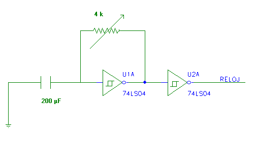
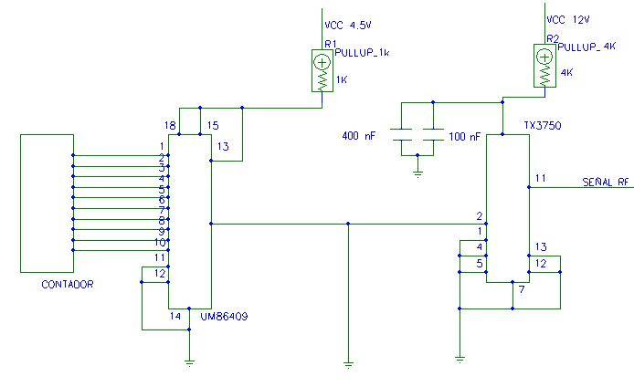

=-[ 0x18 ]-==================================================================
=-[ NetSearch Ezine #7 ]-====================================================
=-[ Mando a distancia universal ]-==========================================
=-[ por cafo ]-=============================================================
Mando a distancia Universal para mega-torpes.
La razon de ser primaria de este articulo es
demostrar cómo con unos conocimientos bastantes escasos sobre un tema en
particular (como es mi caso, en practicamente todo lo que hago ;) acompañados
de un poco de inventiva, se puede llegar a hacer cosas bastantes interesantes
dentro de este mundo, llamado "de la seguridad". La otra razon para
escribirlo es que ya me tocaba escribir algo para el e-zine y, la verdad, no se
me ocurria nada mejor.
Antes siquiera de empezar con el
articulo/proyecto, y aunque estoy seguro de que RaiSe ha puesto el
correspondiente disclaimer al principio del numero, por el hecho de que mi
mando se puede usar en "el mundo real", me gustaria remarcar algo que
todos deberiais tener ya bastante asumido:
|
DISCLAIMER ESPECIAL |
|
Este
articulo trata sorbe el diseño y posterior montaje de un mando a distancia
para puertas de garaje, con la particularidad de que, en vez de ir programado
para una determinada puerta, va realizando ataques basados en "fuerza
bruta" hasta encontrar el codigo correcto y abrirla. Por
ello, y debido a la naturaleza de las ondas electromagneticas que vamos a
usar, es posible que lleguemos a abrir alguna puerta que no sea la nuestra.
Tenemos que tener en cuenta que dicha puerta (la nuestra) es la unica que
tenemos derecho a abrir con este o cualquier otro mando a distancia comercial.
Creo
que es necesario insistir en que abrir cualquier otra puerta ademas de la
nuestra es ILEGAL y que puede ser denunciable por el dueño de la misma. Sé
que todo esto lo sabeis, porque se repite hasta la saciedad en cualquier
documento de este tipo, pero ahora estais jugando en el mundo real, donde la
gente no tiene que saber en que consiste el bug del phf para llamar a la
policia porque alguien esta abriendo su puerta de garaje. Así que no hagais
tonterias, los experimentos con gaseosa. Usad este sencillo montaje solo con
fines de prueba en vuestra propia puerta y, por si acaso, pedidles permiso a
los vecinos por si ocurre cualquier "accidente". A partir de aqui me lavo las manos. Supongo que ya sois mayorcitos para saber con quien estais jugando. |
Introduccion.
Bueno, como siempre me gusta hacer,
empezaremos con un poco de la historia que me ha llevado a esto. Todos tenemos
(o hemos visto) mandos a distancia con los que se abren puertas de garaje,
ventanas, se controla un sistema de riego, etc. Un hecho que tiene que
despertar la curiosidad a mas de uno es porqué, con la cantidad de ondas que
los atraviesan continuamente, los aparatos no se vuelven locos. Esto ocurre
sencillamente porque en cada transmision, se codifica una secuencia numerica
(de diferentes tipos) y el receptor solo reacciona al encontrarse con el codigo
con el que ha sido programado.
Y es precisamente aqui donde empiezó mi
curiosidad. Se empieza por una sencilla premisa: mis aparatos (tanto el mando a
distancia como el receptor de la puerta del garaje) son del año de la polca,
asi que es dudoso que sean muy complejos electronicamente hablando. Es decir,
que no van a tener una generacion de codigo varibale para cada vez que yo abro
mi garaje ni tampoco se van a comunicar entre si para la identificacion excepto
en el momento de abrir la puerta. El mecanismo es simple: yo pulso el boton, el
emisor usa el codigo que tendrá grabado en memoria para generar una señal que
el receptor decodifica, compara con el que tiene grabado en su memoria y, si
son identicos, me abre la puerta del garaje.
A partir de este punto me puse a
explorar con mas detenimiento los dos aparatos que tenia. Con un destornillador
en mano y mucho cuidadito abrí el mando a distancia y detrás de la pila me
encontré con algo parecido a esto (como no tengo escaner, os tendreis que
conformar con sencillos diagramas "made in paintbrush" ;):

Esto es, basicamente, diez palanquitas
con dos posiciones cada una, arriba y abajo. Siguiendo mi instinto, bajo una de
las palanquitas, vuelvo a colocar la pila y le doy al boton y nos encontramos
con que ahora no se abre la puerta. ¿nos lo habremos cargado todo y tendremos
que llamar al cerrajero? Vuelvo a abrir el aparato, coloco la palanquita en su
posicion original y ¡oh sorpresa! la puerta se vuelve a arbir sin problemas.
Pues entonces ya lo tenemos, ¿no? La
codificacion se basa en 10 palanquitas con 2 posiciones cada una, lo que nos da
un total de 2^10 = 1024 combinaciones posibles. ¿O no es asi?. Para comprobarlo
me fui casa del vecino a pedirle el mando de su puerta para "probar cosas
en mi garaje" (pobrecillo, ya no se extraña cuando me ve aparecer por la
puerta con cosas como esta :). Con mucho cuidado, abro su mando, que es del
mismo modeo que el mio, y copio las posiciones de sus palanquitas. Me voy fuera
y dandole al boton consigo abrir su puerta. Hipotesis confirmada.
Pues vaya, 1024 combinaciones. Eso es
una porqueria. Mi megaordenador con un cutre programa en C te saca eso en un
microsegundo. Incluso mis amigos hax0r, que tienen pasta para comprarse una
Palm, pueden ponerle su modulo de infrarojos y con el mismo cutre-programa
mandar todas las combinaciones posibles. ¿Sera tan facil entrar en todas las
casas del mundo?
2.- La parte tecnica.
Bueno, despues de esta pequeña presentación
para ponernos en situacion, vamos a cosas un poco más serias para el desarrollo
de este articulo.
Resumamos lo que tenemos: un mando a
distancia (emisor) que manda una señal con cierta informacion codificada hasta
un aparato (receptor) que abre la puerta de mi garaje. Presumiblemente la señal
sera una onda electromagnetica (porque son faciles de producir y porque no creo
que mi mando lo haga mediante ondas sonoras o vudú, ya que ni grita ni le salen
plumas y se vuelve verde). ¿Pero una onda electromagnética de qué tipo? Podemos
pensar en infrarrojos, como los del mando de la tele. La primera pista para
abandonar esta idea es sencillamente que para que un infrarrojo funcione, tiene
que haber contacto "visual" entre el emisor y el receptor, es decir,
que el receptor tiene que poder "ver" la luminosidad infrarroja que
despide el emisor. Y claro, cuando yo me pongo en la calle detras de un arbol y
le doy al mando, la puerta del garaje se arbe aunque haya una pared de ladrillo
entre mi mando y el motor de la puerta. Además, los aparatos por infrarrojos
tienen un LED que es el que lo produce y en mi mando no esta. Descartamos los
infrarrojos, y por tanto la posibilidad de usar una Palm para esto mismo.
La otra posibilidad probable es que sea
un mando de radio-frecuencia. Esto significaria que mi mando generaria una onda
de una determinada frecuencia (VHF, UHF, EHF, etc) modulada de una determinada
forma (AM,FM, etc) y que el receptor, estando diseñados de la misma forma,
puede recogerla y decodificarla.
Vamos al lio. Desde principios de los años
80, las emisiones a oscilador libre estan prohibidas para dispositivos
comerciales, es decir, que tu no puedes construir un cacharro que emita ondas a
la frecuencia que te salga de las narices, porque eso podria interferir con
otra banda de ondas que esta asignada a otro uso. Viajando un poco por las
paginas del ministerio de comunicacion, nos encontramos con las bandas de
frecuencias permitidas por estos lares:
|
UN |
Aplicación |
Frecuencia |
Especificación |
Pot. Nominal/PRA |
Canalización |
|
UN-4 |
Telemando, Teleseñalización y usos afines de baja potencia |
26,995 / 27,045 / 27,095 27,145 / 27,195 MHz |
R.D. 2/98 ó |
uso común si |
10 kHz |
|
UN-8 |
Telemando y Telemedida |
29,710 ../..30,295 MHz |
R.D. 2/98 ó |
< 500 / 100 mW |
10 kHz |
|
UN-10 |
Telemando sólo para aeromodelismo |
35,030 ../.. 35,200 MHz |
R.D. 2/98 ó |
< 500 / 100 mW |
10 kHz |
|
UN-11 |
Telemando y Telemedida |
40,665 - 40,695 MHz |
R.D. 2/98 ó |
< 500 / 100 mW |
10 kHz |
|
UN-16 |
Telemando,Telemedida, Telealarmas y datos en general |
71,325 MHz |
R.D. 2/98 ó |
< 500 mW. |
25 kHz |
|
UN-20 |
Telealarmas |
139,8000 MHz 141,9500 MHz |
< 5 / 10 W |
12,5 kHz |
|
|
R.D. 2/98 ó |
< 500 mW. |
12,5 kHz |
|||
|
UN-29 |
Telemandos y datos en general |
407,700 MHz |
R.D. 2/98 ó |
< 10 mW |
25 kHz |
|
UN-30 |
Telemando, Telemedida y Telealarmas |
433,075 - 433,350 MHz |
R.D. 2/98 ó |
< 500 / 100 mW |
25 kHz |
|
UN-30 |
Telemando, Telemedida, y otros usos generales |
433,050 - 434,790 MHz |
R.D. 2/98 ó |
< 10 mW |
(*) |
|
UN-39 |
Telemando, Telemedida, telealarmas y datos |
868 - 870 MHz |
R.D. 2/98 ó |
uso común si <10 mW |
25 kHz y |
|
UN-77 |
Tx de Datos |
406,425 ../..406,550 MHz 411,425 ../..411,550 MHz |
< 2 / 10 W |
25 kHz |
|
|
R.D. 2/98 ó |
< 500 mW. |
25 kHz |
|||
|
UN-80 |
Aplicaciones domésticas con tx de audio |
36,7 MHz y 37,1 MHz |
R.D. 2/98 ó |
< 10 µW |
180 kHz |
|
UN-81 |
Aplicaciones domésticas con tx de audio |
31,750 MHz y 37,850 MHz |
R.D. 2/98 ó |
< 50 µW |
(*) |
|
UN-82 |
Voz, ocio, recreo y otros usos generales |
31,000 MHz, 31,350 MHz y |
R.D. 2/98 ó |
< 100 mW |
25 kHz |
|
UN-83 |
Tx de datos |
150,075 MHz |
R.D. 2/98 ó |
< 10 mW |
25 kHz |
|
UN-85 |
Aplicaciones generales de baja potencia |
2445 - 2475 MHz |
ETS 300 440 |
< 100 mW |
(*) |
|
UN-85 |
L.A.N inalámbricas |
2445 - 2475 MHz |
ETS 300 328 |
< 100 mW |
(*) |
|
UN-86 |
Detectores de movimiento, alarmas y datos |
10,5175 - 10,5375 GHz |
ETS 300 440 |
< 100 mW |
(*) |
|
UN-97 |
Telemandos, Telealarmas, datos |
429,850 MHz, 445,550 MHz, |
R.D. 2/98 ó |
< 2 W (uso común |
25 kHz |
|
UN-109 |
Enlaces de vídeo |
2421, 2449 y 2477 MHz. |
ETS 300 440 |
(*) |
(*) |
|
UN-114 |
Bucle inductivo |
115 a 135 KHz |
ETS 300 330 |
(*) |
(*) |
(*) Ver CNAF (O.M. de
22/07/98, BOE 13/08/98)
Ahora es cuando vendria la parte más
arida de todo el proceso: averiguar cual es la frecuencia a la que funciona
nuestro mando a distancia para poder emularlo en nuestro montaje y que el
receptor se lo trague. Basicamente yo encontré dos métodos para hacer esto. El
primero consistiria en abrir el mando, desmontar el modulo emisor (que suele
ser un componente aparte del resto de la circuiteria, porque se compra
"hecho") y ver el modelo el fabricante del mismo. Con esta
información nos iriamos al cualquier catalogo de componentes de dicho fabricante
y buscariamos las especificaciones tecnicas del emisor. Esto puede hacerse
gracias a que, si no se especifica lo contrario, todos estos aparatos funcionan
a una frecuencia fijada en fabrica y que no se puede cambiar. El problema de
este método es bastante obvio: si no tienes cuidado al separar el emisor del
resto del circuito, es posible que luego no puedas volver a soldarlo para que
funcione. Aparte de que siempre es un rollo navegar por los catalagos de
componentes de cualquier empresa…
El segundo método, que es el que yo
utilicé en un principio, requiere la utilización de un osciloscopio. Con este
aparato en menos de 2 minutos y con una sencilla cuenta tendriamos en nuestras
manos la frecuencia exacta a la que funciona el emisor. Pero claro, el problema
de este metodo es que la gran mayoria de nosotros no tenemos acceso
indiscriminado a un osciloscopio para usarlo ¿o sí?
Pensemos un poco. Un osciloscopio es un
aparato que recoge las variaciones de ondas de una señal electrica y mediante
un cañon de electrones las pasa a una pantalla para que la veamos. Bueno, cañon
de electrones tenemos (el monitor) ¿y algo que recoga las variaciones de una
señal electrica? Pues sí, una tarjeta de sonido con entrada de linea. Veamos
como funcionaria el asunto. Con ayuda de dos pinzas de cocodrilo pequeñas,
conectamos una de ellas a la masa del emisor, en este caso siempre será donde
se esté la polaridad negativa de la pila que use el aparato. La otra pinza la
conectamos lo más cerca posible a donde se supone que está el emisor real
dentro del propio modulo de emision. Este normalmente es una espira de cobre
bastante pequeña o, en algunos modelos que he visto, una especie de cajita azul
con muchas patillas (supongo que la espira estará ahi dentro para protegerla o
para construirlas en serie o lo que sea). Bien, las dos pinzas las conectaremos
a una sencilla clavija de tipo jack (la masa a la parte de fuera y la señal al
centro) y lo conectaremos a la entrada de linea para su analisis. Después, con
cualquier programa que capture formas de ondas, normalmente proporcionado por
los drivers de la tarjeta, se captura la forma de la onda, y procedemos a
contar (sí, contar con los dedos :) los picos, miramos a la escala a la que
esta puesto el programa, dividimos, y ya tendriamos la frecuencia a la que
trabaja nuestro mando. Siempre existe la posibilidad de cargarnos la tarjeta de
sonido o el dsp de la misma si somos un poco brutos, pero con un sencillo
montaje a base de diodos, nos ahorraremos preocupaciones (aunque reconozco que
yo no lo hice ;)
Por supuesto, hay formas más
esotericas, o mejor dicho más caras, para sacar la frecuencia a la que va el
mando. Con un escaner de frecuencias podemos detectar facilmente la frecuencia
de nuestro emisor, o incluso se podria introducir una señal parasita en el
emisor, para medir la respuesta y despues desacoplarla para conocer la
frecuencia de trabajo. Hay muchas formas posibles para hacer estas cosas, pero
yo siempre me inclinaré por las mas sencillas ;)
Per pensemos un poco más. Todos hemos visto
que en cualquier tienda donde hagan duplicados de llaves tambien se suelen
vender mandos a distancia para las puertas de garaje, y no son demasiado caros,
por lo que podemos pensar (y con razon) que tienen la frecuencia fijada a un
determinado valor, y ese valor será una especie de estandar en todos los
fabricantes de puertas de garaje. Durante la realización de este articulo no
tuve acceso a ninguno de estos mandos "genericos" (5.000 ptas son
5.000 ptas en cualquier circunstancia), pero haciendo pruebas con mi
osciloscopio casero y cuantos mandos caian en mis manos, descubrí que casi
todos funcionaban a una frecuencia de 433.92 MHz, algunos a 30 MHz y solo uno
en el rango de los 70 MHz. Me gustaría aclarar que estos datos estan basados en
la experiencia propia y que si existe algun estandar establecido para mandos a
distancia genericos que no corresponda a estas frecuencias, pues ha sido fruto
de la casualidad. Mala suerte :)
Bueno, ya tenemos todos los datos tecnicos
necesarios para empezar el diseño del aparato final que intentamos hacer.
3.- El diseño del aparato.
Aquí entramos en la parte realmente
"interesante" del artítulo: el aparato físico en sí. Como no podía
ser de otra forma decidí hacerlo lo más sencillo posible, sin pensar demasiado
en su ampliación futura ni en su compatibilidad con otros mecanismos parecidos
ni nada. Buscaba poder abrir la puerta del garaje y eso es exactamente (y lo
unico) que se consigue con él.
Veamos. Circuitalmente nuestro aparato puede
diferenciarse en dos zonas muy claras: una parte digital que se encargaría de
controlar los pulsos de reloj y de generar la secuencia de fuerza bruta, y otra
parte que emitiría la señal hasta el receptor. Empecemos con la primera.
3.1 Contador digital.
La base de nuestro contador será un sencillo
circuito 163A capaz de contar de 0 a 16 con una salida de acarreo. También
podria haber usado algun otro contador de más prestaciones (y por consiguiente
más caro) para llegar de 0 a 512 y poner 2 en cascada o incluso comprar alguno
de 2048 y parar a la mitad. Como tampoco es idea de hacer historia con el circuito,
lo implementaremos todo con 3 circuitos de 4 bits: 4 + 4 + 4 = 10 bits para
llegar hasta el final (2^10=1024) y otros 2 que despreciaremos. El diagrama
ANSI del 74LS163A es:

Para el que no esté muy familiarizado con el
estandar ANSI para representacion de circuitos, solamente hay que comentar que
el diagrama normalmente representa un circuito discreto (de una pieza) junto
con su numero de catalogo (para los circuitos antiguos, estos numeros de
catalogos son iguales para todos los fabricantes, asi un 00 siempre es una
puerta NAND, un 32 una OR, etc). Cada una de las lineas que salen del circuito
representa una de las patillas del mismo, numeradas segun el siguiente esquema:

(Esta forma de contar es universal, es decir,
siempre se va a contar desde donde el circuito tiene la hendidura en sentido
inverso de las agujas del reloj). De las 8 patillas de la parte de abajo del
dibujo del 163A, las 4 de la izquierda son las entradas (que conectaremos las 4
a masa para empezar la cuenta desde 0) y las cuatro de la derecha son las
salidas que nos darán la cuenta binaria necesaria para el circuito. La entrada
marcada con una flecha hacia dentro es la entrada del reloj del circuito y la
salida con el numero 15 es una salida que siempre está a 0 voltios (lógicos)
excepto en el ciclo en el que la cuenta llegue a 15 (en realidad es un sencillo
AND que tiene el circuito internamente que se activa cuando todas las salidas
estan a 1). El resto de las entradas son señales de control que no son
necesarias para nuestro proyecto. Una señal importante va a ser esta que he
comentado que se enciende al llegar a 15. Dado su comportamiento, normalmente
se usa como divisor de reloj por 16, es decir, dada una señal periodica en el
circuito esta salida da la misma señal pero 16 veces mas lenta (por eso el
nombre funcional del bloque CTRDIV16 --> CounTeR-DIVisor 16). Usando esta
señal como entrada de reloj del siguiente circuito de la cascada, obtenemos que
este circuito solo empezará a contar cuando el primero llegue a 16, que es
precisamente lo que queríamos obtener:

Aqui alguien deberia protestar porque la
señal 15 tal y como se ha comentado, solo se activa cuando las 4 salidas del
primer circuito estan a 1 lógico, es decir, se activa durante un dieciseavo del
tiempo que deberia:

Y no contaria el tiempo necesario, ¿verdad?
Pues no. Lo que pasa es que todos los circuitos contadores se activan por
flanco de subida o de bajada, o sea que actuan cuando la señal pasa de bajo a
alto o viceversa respectivamente. Como puede verse, el flanco de subida (y el
de bajada correspondiente) solo se da cada 16 ciclos de subida (o bajada) de la
señal de reloj, que es lo que buscabamos. Creo que nuestro 74LS163A funciona
por flanco de bajada, pero no daria mi brazo por eso ;) De todas formas es algo
que no afecta en las especificaciones del circuito, por o que no nos
preocuparemos.
Conectando la salida de acarreo del segundo
circuito a la entrada de reloj del tercero habremos completado esta parte de
los contadores:

Para hacer que todo el circuito funcione
necesitamos una señal de reloj periodica. Ya que para la otra parte del
circuito (la analógica) usaremos un oscilador de cristal regulado, he pensado
que aqui mejor usamos un aestable para poder seleccionar la frecuencia de reloj
nosotros mismos. La razon para esto es poder emular la duracion de la pulsacion
que hacemos cuando intentamos abrir la puerta con el mando convencional.
Normalmente se mantiene pulsado el boton durante medio segundo o un segundo.
Usando este aestable regulable podemos ir variando la respuesta del circuito
para obtener mas velocidad o mas seguridad en la emision; es decir, poniendo
mucho tiempo de emision, nos aseguramos que al receptor le llega una señal
clara y bien definida, mientras que si ponemos una frecuencia muy alta a lo
mejor el receptor no lo pilla bien pero acabariamos la cuenta mucho mas
rapidamente (para cuestiones de depuracion y tal):

El montaje de un aestable para la obtencion
de una señal de reloj periodica se basa en el tiempo de carga/descarga de un
condensador, regulado con una resistencia variable (o potenciometro, o reostato
o como se quiera llamar). Los valores que he elegido son orientativos: obviamente
poniendo un condensador mas pequeño se cargara/descargara más rapidamente y se
obtendra una frecuancia menor. Igual ocurre si escogemos una resistencia
diferente. (Realmente he puesto estos valores porque son los que tenia en casa
y eso de ir a la tienda... ;-). Los dos inversores son inversores con Schmicth –
Trigger, que presentan efecto de histeresis para estabilizar los cambios de
nivel. No estoy seguro de si funcionara igual de bien con inversores normales.
Inicialmente habia pensado usar un diseño
similar para el oscilador de la parte analogica, pero resulta que a partir de
20 MHz (recordad que nuestro mando funciona a mas de 400 Mhz) la cosa no está
muy conseguida con osciladores de cristal normales, asi que mejor comprar uno
regulado, que estan muy optimizados y siempre dan la frecuencia para los que
fueron fabricados.
3.2 El emisor
Como creo que ya comenté en al principio,
para ahorrar componentes y gastos inutiles, usaremos un emisor integrado que
funcione a la frecuencia que queremos. Asi nos ahorramos tener que montar otro
reloj (si no funciona siempre podremos echar la culpa a esto ;-). El modelo que
usaremos sera el TX3750 que emite a una potencia de 1 mW (unos 100 metros en
condiciones ideales: en linea recta y sin obstaculos ni interferencias). El
funcionamiento es muy sencillo: una vez conectado y alimentado correctamente,
por la entrada de datos van entrando los niveles logicos (0 y 5 V) de las
salidas de nuestro contador y el emisor los manda por RF como una cadena de
impulsos (un tren de ondas) hasta el receptor, que los decodifca y compara con
el que tiene grabado en memoria. Como lo compramos todo como un modulo
separado, solo hay que unirlo a nuestro montaje anterior y empezar a emitir.
3.3 Juntandolo todo.
Ahora solo falta algun medio para unir el
contador digital al emisor analogico. He usado estos adjetivos especificamente
para hacer notar que los valores logicos no concuerdan exactamente con los
valores “ideales”: un “cero lógico” se corresponde con 1.5 V en la tecnologia
TTL y el “uno logico” son 4.5 V. El nivel alto lo podemos usar directamente (se
aproxima bastante a los 5 V que usa el TX3750), pero para los niveles bajos
usaremos resistencias de Pull-down para rebajar un poco los niveles.
La forma de hacer llegar la cuenta binaria de
forma ordenada hasta el emisor es mediante un codificador/decodificador UM86409
(por alguna razon este circuito lo utiliza todo el mundo, asi que yo no voy a
ser menos ;) de 12 bits.
La verdad es que a partir de aquí, he usado
un montaje archiconocido en los circuitos emisores-receptores. Si quereis mas
informacion sobre lo que es cada cosa, el google arroja cerca de 3000 paginas
que usan este mismo modelo ;):

Solamente hay que decir que el codificador,
al ser TTL, hay que alimentarlo a 5 voltios y el modulo emisor a 12.
4. Problemas y mejoras
Hay muchas cosas que comentar sobre el mando
realizado en el articulo:
·
Ninguno
de los circuitos que he incluido aquí han sido diseñados para ser “eficientes”
ni “fiables”, es decir, no he incluido filtros, condensadores y ajustadores de
nivel para evitar interferencias ni demas. Solo es un modelo sobre el que se
pueden introducir los cambios que querais. Yo por mi parte, una vez que comprobé
que la cosa funcionaba lo desmonté todo y lo volvi a meter en la caja ;)
·
Ya
lo comenté al principio, pero este mando funciona con una puerta que usa un
sistema viejisimo. El principal obstaculo para que funcione con otros
receptores es el numero de bits del contador (solo 1024 en este caso). La
solucion mas sencilla es meter mas contadores en cascada.
·
No
podemos saber cuando se ha terminado la cuenta. Orientativamente podemos decir
que si hemos regulado el aestable a 0.5 segundos entonces 0.5 * 1024 = 512 à aprox 10 minutos. Esto se puede solucionar poniendo
un LED en las 2 ultimas patillas del ultimo contador (los que formarian el bit
11 y 12) para que se encendiera cuando se acabara la cuenta. Vosotros mismos :)
·
He
pasado de explicar como hacer el montaje fisico del circuito. Como la parte que
trabaja a alta frecuencia está en un modulo separado, es completamente viable
realizar el montaje en una pequeña protoboard, para no tener que gastar PCB’s
ni nada. De todas formas, este montaje es solo para fines educativos, no?